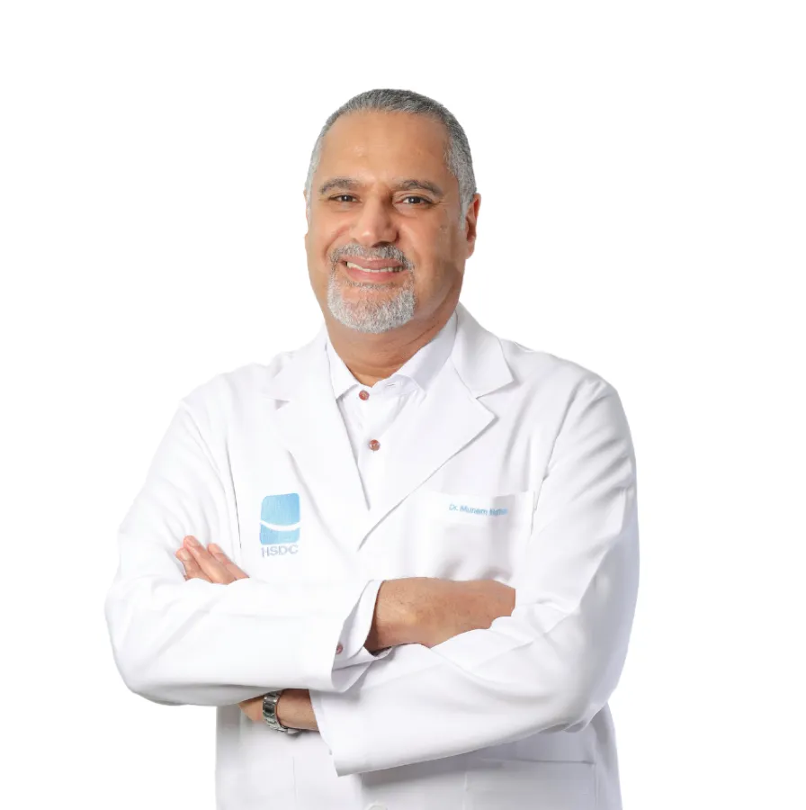
Dr. Munem Haffadh
استشاري تقويم الأسنان · المؤسس
أخصائيا تقويم، واستشارية تركيبات، واستشاري جراحة فم، وأخصائي علاج جذور، وثلاثة أطباء أسنان عامّين، كلهم في مبنى واحد في السويفية. أسّسه د. منعم حفاظ، في العيادة الخاصة منذ 1990.
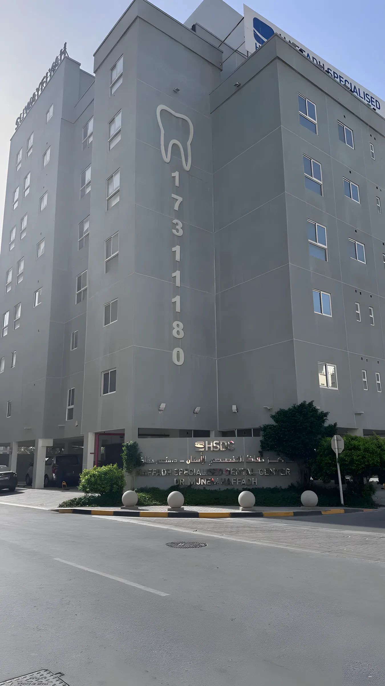
احجز مع الأخصائي الذي يحتاجه علاجك، أو ابدأ بفحص عند أحد أطباء الأسنان العامّين. اطلب أي طبيب بالاسم عند اتصالك.

استشاري تقويم الأسنان · المؤسس
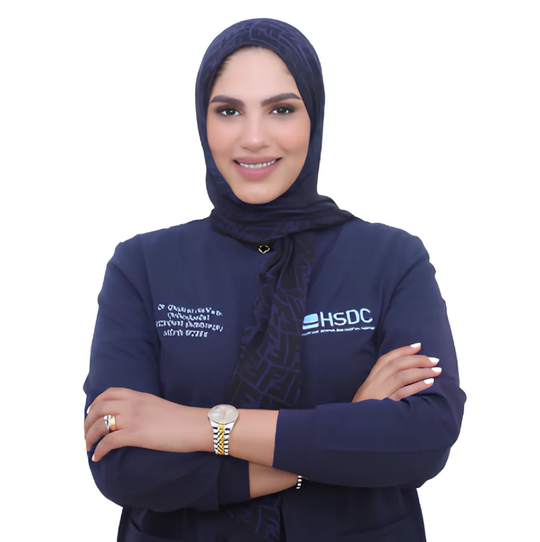
أخصائية تقويم الأسنان
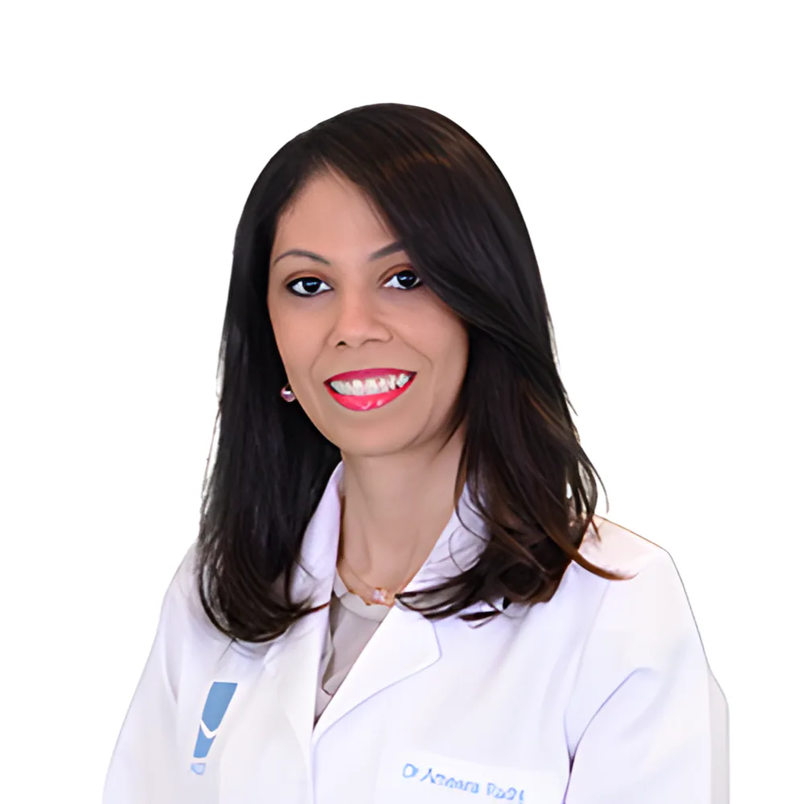
استشارية تركيبات الأسنان
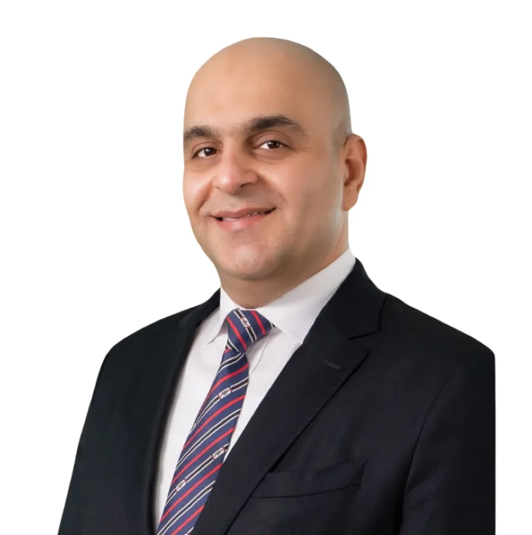
استشاري جراحة الفم والوجه والفكين
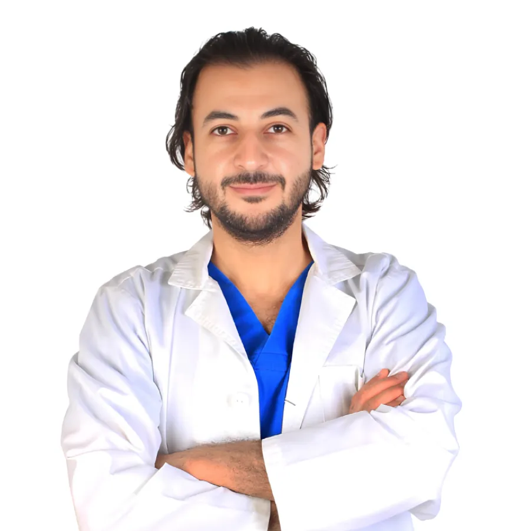
أخصائي علاج جذور الأسنان
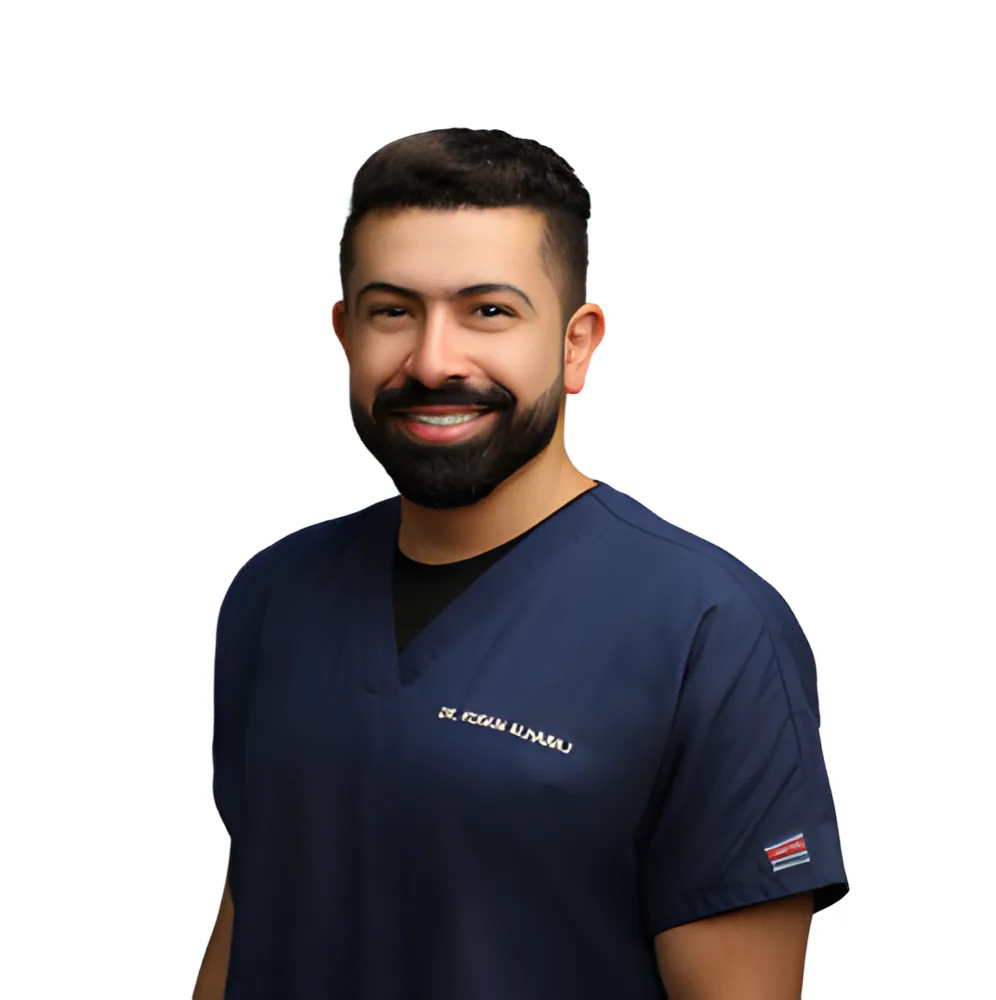
طبيب أسنان عام
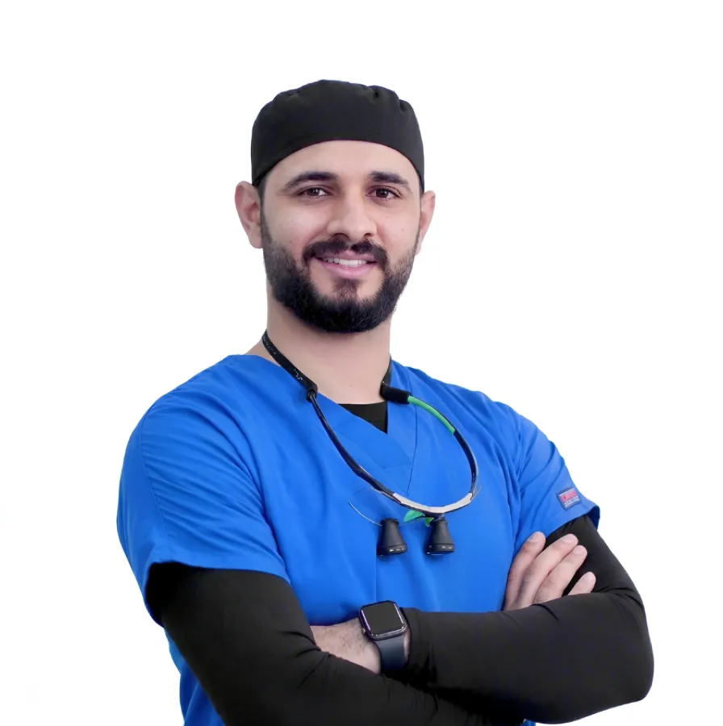
طبيب أسنان عام
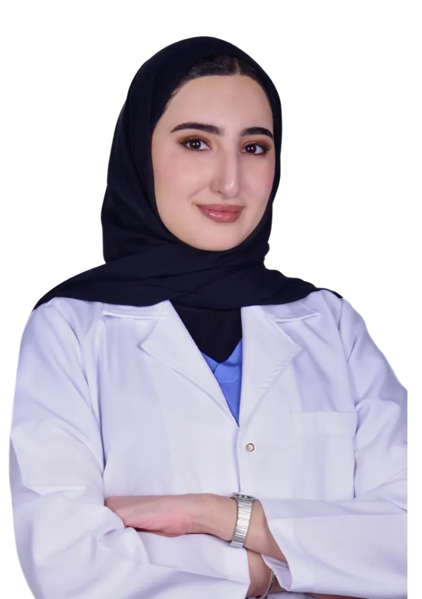
طبيبة أسنان عامة
من التنظيف إلى التقويم والزراعة وتصميم الابتسامة، للأطفال والكبار وكبار السن. نصمّم خطة العلاج لك، مع خيارات تجميلية إن رغبت.
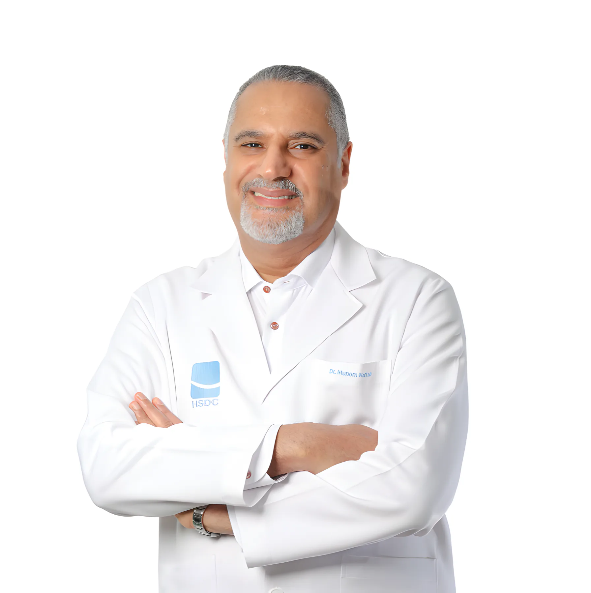
«ابتسامتك هي شغفنا»د. منعم حفاظاستشاري تقويم الأسنان، مؤسس المركز
يعمل د. منعم في العيادة الخاصة بدوام كامل منذ عام 1990، ويخدم فريقنا المرضى في البحرين منذ 1999. واليوم يجمع المركز الأخصائيين وأطباء الأسنان العامّين تحت سقف واحد.
يوم الجمعة نفتح لحالات الطوارئ فقط: الألم الشديد، التورّم، كسر السن أو سقوطه. اتصل بنا قبل الحضور.
الردهة والاستقبال وغرفة الانتظار في مبنانا على طريق 5124 في السويفية.

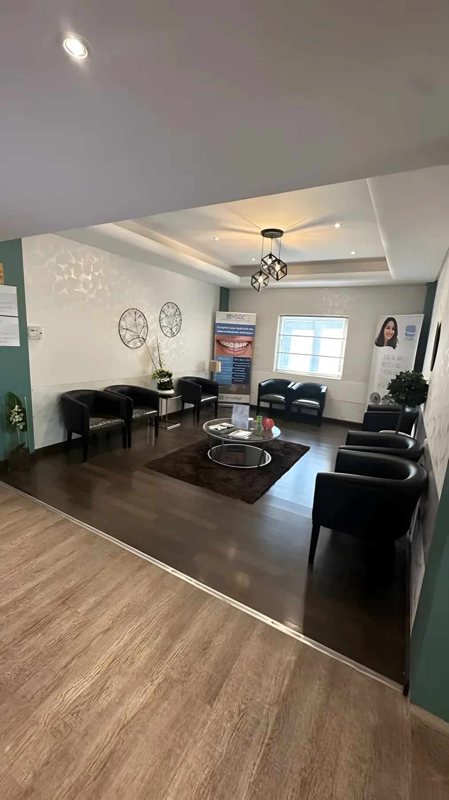
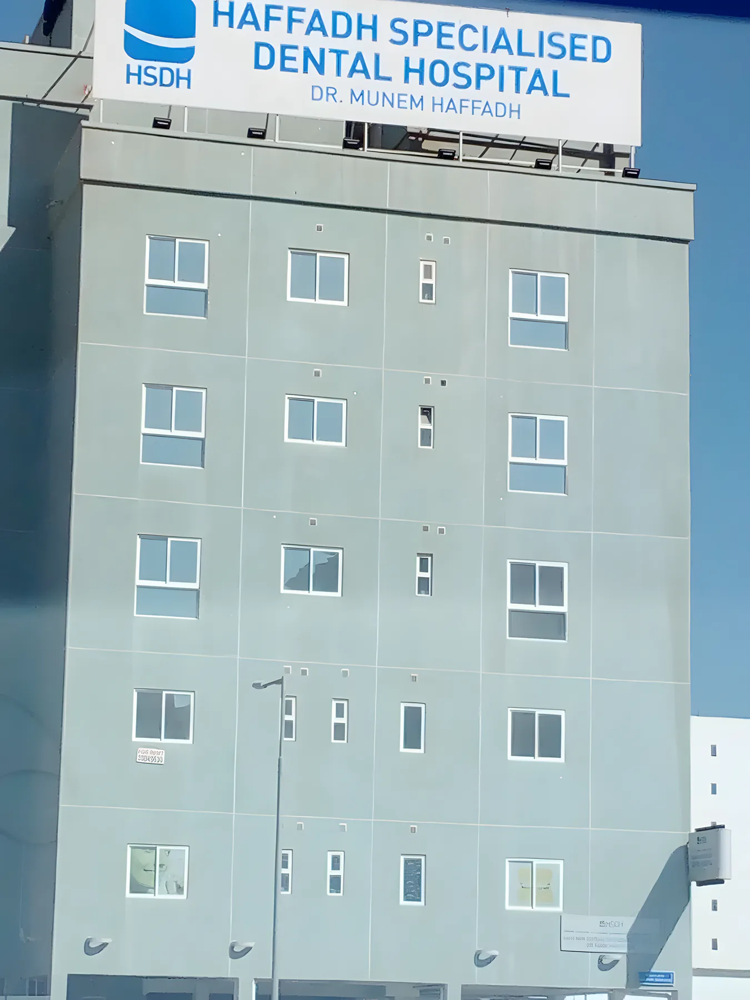
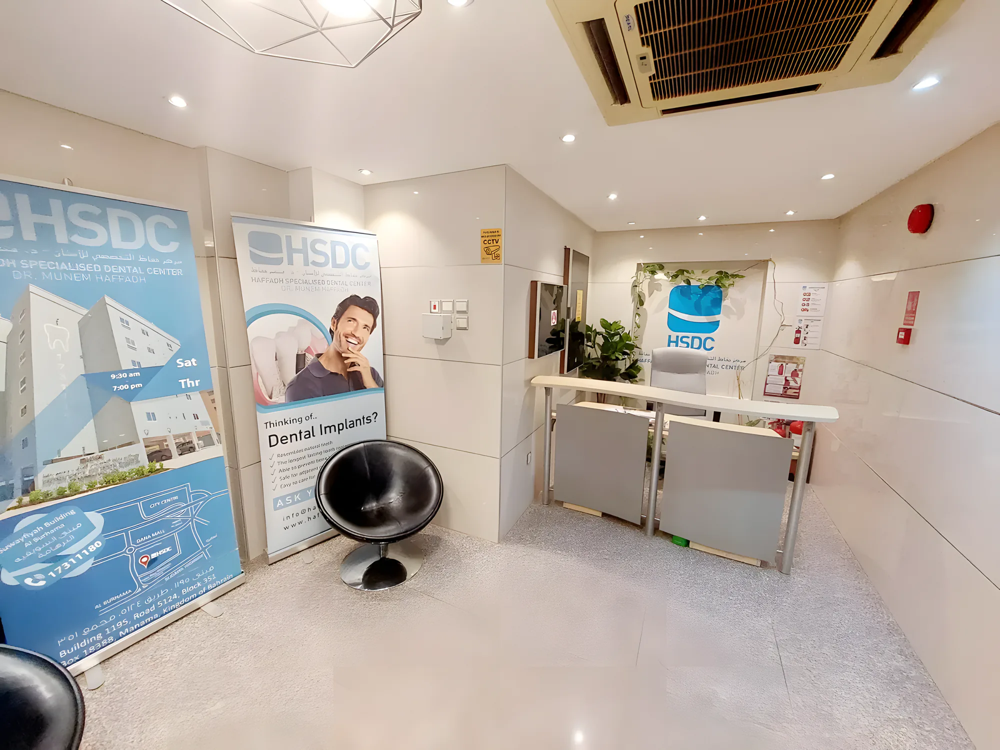
شركات التأمين المدرجة لدى المركز. اتصل بنا لنتأكد من تغطية بوليصتك قبل زيارتك.
مبنى 1195، طريق 5124، مجمع 351، بناية السويفية، المنامة
ابحث عن السنّ الكبير والرقم 17311180 على واجهة المبنى.
| السبت | 9:30 ص – 7:00 م |
| الأحد | 9:30 ص – 7:00 م |
| الإثنين | 9:30 ص – 7:00 م |
| الثلاثاء | 9:30 ص – 7:00 م |
| الأربعاء | 9:30 ص – 7:00 م |
| الخميس | 9:30 ص – 7:00 م |
| الجمعة | للطوارئ فقط |